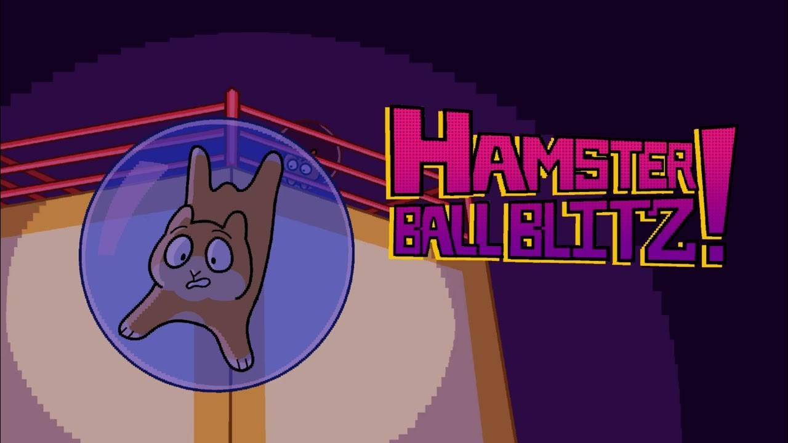
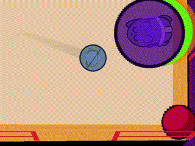
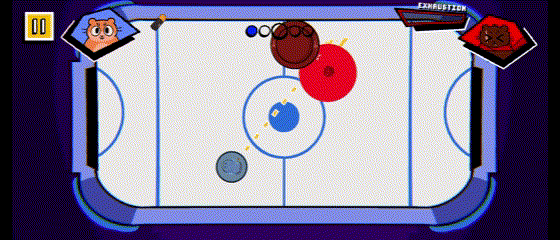
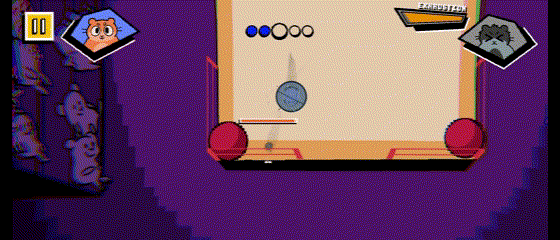
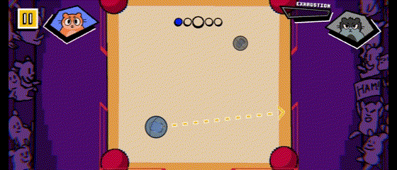
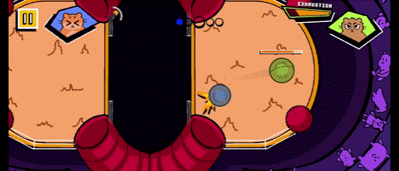
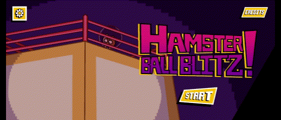

About
Hamster Ball Blitz! is a mobile physics-based action game published by MassDiGI. Knock your opponents out of the ring as you help Chester fight his way through the ranks of the Hamster Ball Wrestling League.
I worked with a team of 6 university students from the Boston area to develop Hamster Ball Blitz! over the course of the summer as part of MassDiGI's Summer Innovation Program internship.


Art Team: Liberty Henry, Corinne Doucette
Tech Team: Austin Hyatt, Justin Ignatowski, Rose Yang
Music and Audio: Ben Zakharenko
Showcase
Core Systems
As the team's lead programmer, I developed many of the game's core combat features, including: player movement, knocking an enemy out of the arena, teetering, winning a match, player abilities, and boss abilities.
I focused very closely on developing the game's unique movement system. We wanted for the controls to feel frantic and to explore a unique control scheme only possible in a mobile game.

Each swipe applies a small force to the player in a direction, so the player must swipe frantically in order to move. Enemies and the environment also add forces to the player, so the player must learn to control their momentum to harness the game's movement.

The final opponent of each tournament wields a powerful ability. I programmed the boss ability system and several of the boss abilities. I created visual effects that add extra flair to these special powers.


Animation Pipeline
Each hamster in the game has distinct sprites and animations. I created a system and animation import pipelines to allow for using different sprite sheets for the same animations.

Visual Effects
One of my primary focuses during development was on juicing up the game feel as much as possible. There were a large number of visual effects and animations that I programmed to make the combat feel very responsive and the UI and camerawork feel very lively and expressive.




